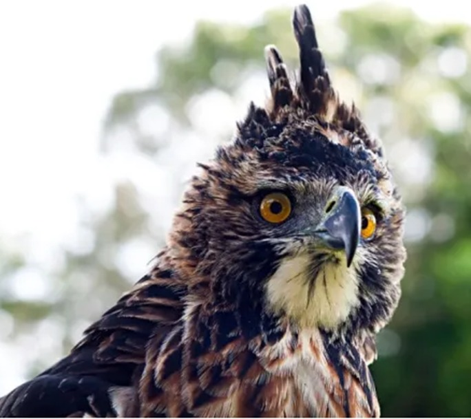
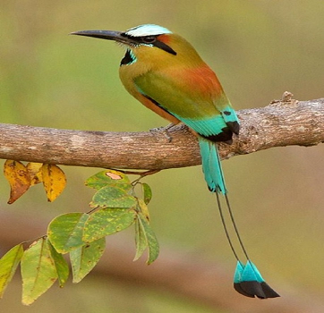

Se trata de un águila típica de bosques tropicales de tierras bajas. Los juveniles se
caracterizan por un plumaje blanco en la cabeza y en el vientre, mientras que los adultos
presentan un tamaño medio a grande y un plumaje anaranjado en las partes laterales de la
cabeza y un vientre a rayas blancas y negras.
Además, estas aves rapaces tienen una cresta
negra y marrón. Dado que es una especie poco común que se encuentra en peligro de extinción
en el Salvador, se requiere un tratamiento especial por tal de garantizar la procreación y
fomentar las siguientes generaciones de esta especie.
Nombre científico: Spizaetus ornatus.
Habitad: Bosques.
Especie: Ave.
Origen: Sureste de México.

Es una ave común y conocida en varios países de América central, en las últimas décadas se le
ha
atribuido un objetivo comercial el cual ha conllevado a la reducción grave de sus
poblaciones en
El Salvador, así como en otros de los países que habita naturalmente, como México y
Guatemala.
Se caracteriza por un color de plumaje verde y azul vivo y una cola con plumas muy largas.
Las hembras pueden presentar alguna variación en el color del plumaje, con manchas oscuras y
el pecho rojo.
Nombre científico: Pharomachrus mocinno.
Habitad: Bosques tropicales y subtropicales.
Especie: Ave.
Origen: México.

Otra de las especies de animales en peligro de extinción salvadoreños es el gavilán común se
caracteriza
por un tamaño pequeño, unas alas largas de forma redonda y una cola también larga. En esta
especie, las
hembras suelen ser más grandes que los machos, pudiendo llegar a ser hasta unos 25% más
grandes.
Nombre científico: Accipiter nisus.
Habitad: Áreas templadas y subtropicales.
Especie: Ave.
Origen: Eurasia.

Esta ave el más frecuente de los ánades. Macho fácilmente reconocible por su aspecto, con la
cabeza de color verde
irisado, un collar blanco que rodea el cuello y un par de plumas rizadas en la cola y pico
amarillo verdoso; pecho
de color castaño y vientre blanco. Las alas son grises con espejuelo azul. La hembra es de
color marrón y también
el pico es de color marrón. Alcanza los 58 cm de tamaño y pesan de 700 a 1600 gr. El plumaje
de eclipse del macho
es como el de la hembra, aunque conserva el color amarillo del pico, lo cual sirve para
reconocerlo.
Nombre científico: Anas platyrhynchos.
Habitad: Zonas o regiones subtropicales.
Especie: Ave.
Origen: África y América.

Los individuos adultos de esta especie son catalogados como aves de tamaño grande, midiendo
entre 51 a 63.5
centímetros (20 a 25 pulgadas). Tienen los ojos de color ámbar a rojo, la membrana carnosa
en la base superior
del pico y las patas son de color y tono amarillo a amarillo-anaranjado. La coronilla, la
nuca y las partes
superiores son de color y tono gris negruzco (la hembra es de color ligeramente más marrón),
los auriculares
son de color blanquecino a gris pizarra.
Nombre científico: Accipiter chionogaster.
Habitad: Bosques de pino y pino-encino, bosques semideciduos y
siempreverdes.
Especie: Ave.
Origen: Estado de Oaxaca, México, hasta la parte norte-central de
Nicaragua.

Mide 9.5 cm. y pesa 4.3 grs. Es de tamaño mediano; presenta las secundarias rufas llamativas,
y las dos timoneras
más externas blancas en gran parte con el borde externo oscuro, lo cual le da un aspecto
listado a la cola por
encima cuando se encuentra extendida.
El macho adulto es verde bronceado por encima, con la cola bronce fusco en gran parte y las timoneras
externas de punta negruzca. Es verde resplandeciente por debajo, con el abdomen
más opaco. La hembra es gris clara por debajo, con pecas verde bronceado en los lados.
Nombre científico: Eupherusa eximia.
Habitad: Montañas, laderas, bosques perennifolios y plantaciones de café
de sombra.
Especie: Ave.
Origen: Nativo de Belice, Costa Rica, El Salvador, Guatemala, Honduras,
México, Nicaragua y Panamá.

Esta especie ha sido incluida en la categoría En peligro porque la información sobre los
niveles de explotación y la pérdida de hábitat, y las tendencias de la población local, sugieren que la especie
está experimentando al menos una disminución muy rápida de la población. Se distingue por su frente amarilla, que
puede extenderse hasta la parte frontal del píleo, y franja amarilla la que se extiende hacia el cuello.
El resto de su plumaje es de color verde vivo. El pico es grisáceo, y es más pálido hacia la base de la mandíbula
superior. Sus patas también son de color gris.
Nombre científico: Amazona auropalliata.
Habitad: Bosques semiáridos y bosques semicaducifolios, matorrales áridos
y sabanas, manglares,
claros en bosques caducifolios, bosques pantanosos del Pacífico, bosques de galería siempre
verdes y, a veces,
crecimiento secundario en paisajes agrícolas.
Especie: Ave.
Origen: Sur de México y el norte de América Central, incluyendo Guatemala,
El Salvador, Honduras, Costa Rica y Nicaragua.

El zopilote rey (Sarcoramphus papa), asimismo llamado cóndor de la selva, cóndor real, chom,
cuervo real, jote real, rey zope, zopilote real o bien rey zamuro,asimismo, chombo rey y rey de los gallinazos,es
una suerte de ave de la familia Cathartidae (zopilotes). Como especie buitre, hace una fundamental tarea de limpieza
del entorno.
De manera frecuente efectúa el corte inicial en cadáveres de animales grandes. Por su tamaño, desplaza
a buitres americanos más pequeños que se hallan cerca del cadáver. Vive treinta años en cautiverio o bien libre.
Nombre científico: Sarcoramphus papa.
Habitad: Habita eminentemente los bosques tropicales de tierras bajas no
desequilibrados, como sabanas
y praderas que se hallan en la proximidad de estos bosques.
Especie: Ave.
Origen: Desde el sur de México hasta el norte de Argentina.

El Chipe negriamarillo dorsinegro, chipe caridorado, chipe de mejillas amarillas, chipe
dorsinegro, reinita cachetidorada o reinita pechinegra, es una pequeña ave que la podemos encontrar en los bosques de
pino-roble de las tierras altas de Chalatenango y Santa Ana.
Anida únicamente en Texas, Estados Unidos, de mayo a octubre; luego, migra hacia México y
Centroamérica, donde habita solo en la época seca. Los bosques de pino-roble salvadoreñosson vitales para su sobrevivencia,
dado que es donde se alimenta y vive la mayor parte del año.
Nombre científico: Setophaga chrysoparia.
Habitad: Áreas boscosas de enebros y encinas.
Especie: Ave.
Origen: Texas, Estados Unidos, México y Centro America.

Esta es un ave relativamente pequeña, del tamaño de un puño de una persona adulta, en
promedio mide 34 cm de
largo y pesa unos 65 gramos. Tiene el cuerpo mayoritariamente verde con la espalda y el
vientre rojizo y
además presenta diversas tonalidades de verde, celeste tornasol, blanco, amarillo,
anaranjado y negro.
Posee una raya azul pálido sobre el ojo, asemejando un antifaz y en la garganta una marca vertical
negra con un margen azul. Las plumas de vuelo y la superficie superior de la cola también son azules.
Nombre científico: Momoto cejiazul.
Habitad: Vive en hábitats bastante abiertos, como bordes de selvas,
bosques ribereños y matorrales.
Especie: Ave.
Origen: Centroamérica desde la península de Yucatán hasta Panamá y América
del Sur.